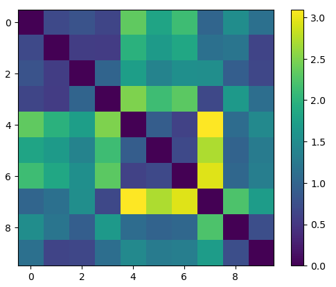
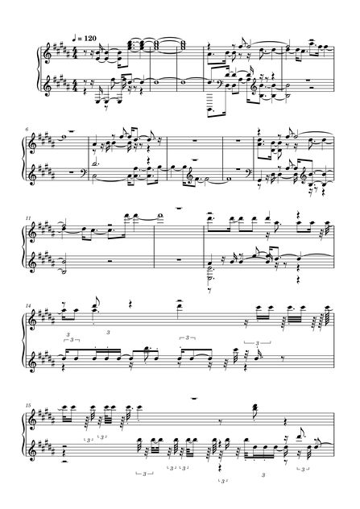
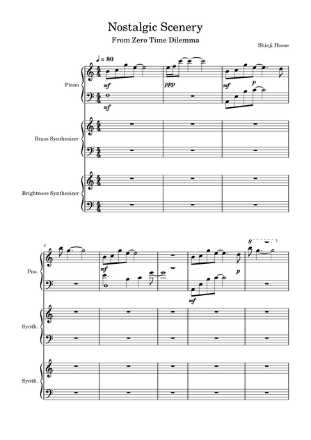
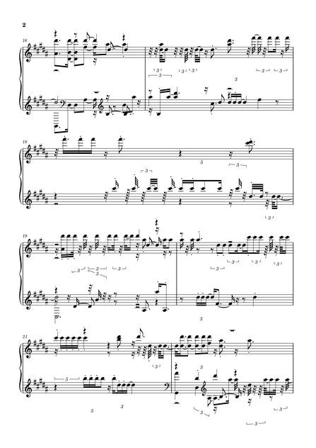
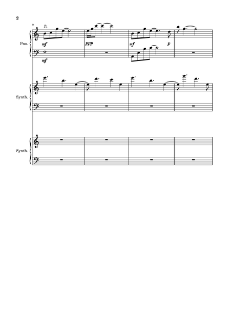
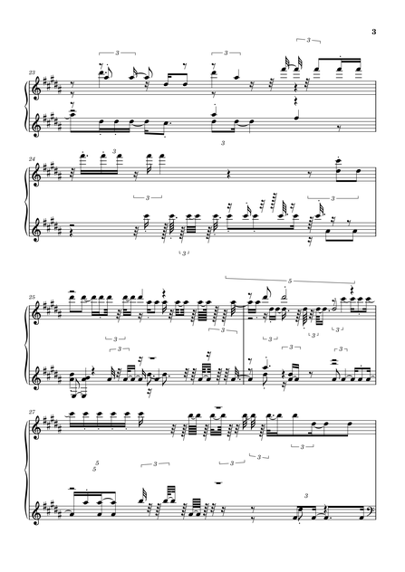
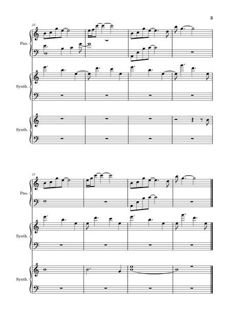
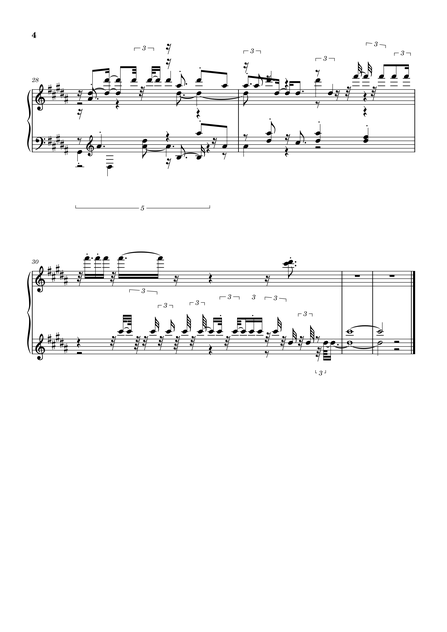

Below is the similarity matrix generated by the python notebook. As always, please click on any images to open full-sized versions in a new tab.
Bearing in mind that tracks 0 - 3 are classical pieces, tracks 4-6 are rock songs, and tracks 7-9 are the videogame soundtrack pieces aligned with my theme, this graph is incredibly informative.
Here is the automatic transcription of my piece placed opposite each page from my original version, as last seen in Week 2.
|  |  |
|  |  |
|  |  |
|  |
There are many obvious points of failure in this automatic transcription - perhaps a generous name for it. Not only are bars 1 - 12 rendered inordinately more complex despite sounding largely similar when played through MIDI, the piece loses all sense of coherence from bar 13 onwards, where it begins to truly struggle with placing both the piano and synthesiser parts into the same staves, resulting in, rather than one sustained chord for an entire bar, instructions for the performer to simply hammer the same note over and over again - most obvious in comparing both bar 19s.
The other main point of failure is in, despite keeping the same 4/4 time signature throughout, the piece somehow gaining an extra twelve bars. This is perhaps because of the incorrect tempo setting resulting in several aditional fractional rests placed between notes - bars one and four being particularly obvious demonstrations of this phenomenon.